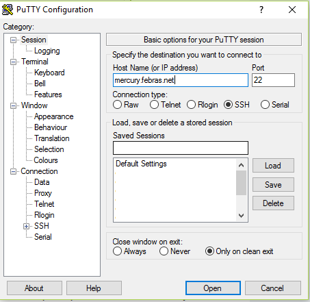

Руководство пользователя кластера ВЦ ДВО РАН
Содержание
Данное руководство содержит минимально необходимый объем информации
для работы на кластере ВЦ ДВО РАН: описание процесса регистрации,
сведения по работе в ОС Linux (вход в систему, работа с каталогами и
файлами, мониторинг) и работе с MPI программами и не параллельными
программами на кластере (компиляция, запуск, остановка, работа с
очередями). В тексте под термином параллельная программа
подразумеваются только MPI программы.
Команды и переменные командного интерпретатора, названия программ, листинги, непосредственный ввод/вывод консоли выделены моноширинным шрифтом.
Вопросы относительно работы кластера следует отправлять на e-mail: support@hpc.febras.net.
Вопросы относительно этого документа (ошибки, неточности, предложения) можно отправлять на e-mail: support@hpc.febras.net.
Регистрация
Регистрация пользователей на кластере происходит автоматически — посредством web-интерфейса. Загрузить html страницу с формой для регистрации можно по адресу: http://hpc.febras.net/cluster/registration.html или пройти по ссылке с главной страницы сайта кластера: http://hpc.febras.net/.
В регистрационной форме пользователь должен заполнить ряд обязательных (выделены символом «*») полей:
Фамилия, Имя, Отчество Заполнение разрешено как кириллицей, так и латинскими буквами.
Email (сообщения кластера) По этому адресу будут отправляться сообщения связанные с пользовательскими заданиями, а также организационные сообщения связанные с регистрацией пользователя, ошибками в работе и т.п.
Телефон Номер контактного телефона.
Место работы Полное наименование места работы или учебы.
Логин Имя пользователя применяемое для входа на кластер. Разрешено применение тольколатинских букв и цифр. Минимальный размер этого поля 4 символа.
Пароль Желаемый пароль для входа на кластер. Разрешено применение только латинских букв и цифр. Минимальный размер этого поля 8 символов.
Пароль (еще раз) То же, что и предыдущее. Служит для контроля корректности ввода пароля.
Цель регистрации В этом поле пользователь может оставить дополнительную информацию для администратора, которую он посчитает важной.
После заполнения формы и нажатия на кнопку «Отправить регистрационную информацию» заявка на регистрацию автоматически будут отправлена администратору кластера. Заявка рассматривается администратором, решение о регистрации согласовывается, в случае необходимости, с руководством. При отсутствии ошибок заполнения формы и принятия положительного решения о регистрации будет создана учетная запись пользователя. На контактный e-mail будет отправлено сообщение, содержащее краткие инструкции для подключения.
Вход в систему
Для работы с системой пользователь должен иметь свою учетную запись на управляющем узле кластера. Регистрация пользователя на кластере происходит в соответствии с предыдущей частью руководства. После регистрации пользователь получает свое имя (логин), пароль и домашнюю директорию. Если имя пользователя, например, будет user, то домашняя папка находится в /home/user.
Пользователи имеют возможность работать на кластере с любой машины, находящейся в сети института и интернет. Для входа в систему пользователю необходим адрес сервера (mercury.febras.net), а также имя и пароль, полученные при регистрации.
Вход с Windows-машины
Работа с системой осуществляется по безопасному протоколу SSH при помощи какого-либо ssh-клиента. Клиент должен поддерживать протокол версии 2. Рекомендуется использовать PuTTY. Эта программа является свободно распространяемой и проста в использовании.
После запуска программы (рис. 1) пользователь должен выбрать протокол ssh и в поле «Host Name (or IP address)» указать адрес сервера. Нажатие на «Open» приведет к отправке запроса на подключение. В случае успешного подключения к серверу будет предложено ввести имя (логин), а затем и пароль.

Рис. 1.: Окно ssh-клиента PuTTY
При вводе пароля символы на экране не отображаются. Если все введено правильно, то пользователь автоматически окажется в своей домашней директории. Этот каталог доступен пользователю с любого узла кластера.
Примечание. На кластере существует единое дисковое пространство для директорий /opt (только чтение) и /home. Все узлы используют дисковый массив сервера посредством сетевой файловой системы NFS. Файл записанный на одном из узлов кластера автоматически становится доступен на любом другом.
Работа в ssh-сессии происходит в терминальном (текстовом, консольном)
режиме. Необходимо помнить, что консоль Linux, в отличии от Windows,
различает регистр вводимых символов, то есть mydoc.txt и mydoc.TXT не
одно и то же. После входа на экране отображается консоль командного
интерпретатора в следующем формате имя_пользователя@машина текущий_каталог:
[user@mercury ~]$
Вход с терминала Linux
В любой дистрибутив ОС Linux входит терминальный ssh-клиент (обычно OpenSSH). Минимальный формат команды для подключения к кластеру таков:
[user@localhost ~]$ ssh mercury.febras.net -l имя_пользователя
Копирование файлов
Работа на кластере
Навигация
Консоль
mc
Редактирование файлов
mc-edit
Emacs, VIM
Компиляция программ
На кластере (на 15.12.2013) поддерживаются следующие компиляторы языков программирования для архитектуры x86_64:
| Компилятор | Путь к файлу компилятора | Язык |
| Intel C 14.0.1 | /opt/intel/composer_xe_2013_sp1.1.106/bin/intel64/icc | C |
| Intel C++ 14.0.1 | /opt/intel/composer_xe_2013_sp1.1.106/bin/intel64/icpc | C++ |
| Intel Fortran 14.0.1 | /opt/intel/composer_xe_2013_sp1.1.106/bin/intel64/ifort | Fortran 77/90 |
| GNU C 4.1.2 | /usr/bin/gcc | C |
| GNU C++ 4.1.2 | /usr/bin/g++ | C++ |
| GNU Fortran 4.1.2 | /usr/bin/gfortran | Fortran 90 |
| GNU Fortran 3.4.6 | /usr/bin/g77 | Fortran 77 |
В переменной среды «PATH» для всех пользователей прописаны пути к компиляторам Intel для архитектуры x86_64. Поэтому, например, при вводе команды:
[user@mercury ~]$ icc
будет запускаться 64-битная версия компилятора Intel C. В переменной среды «LD_LIBRARY_PATH» также указаны пути к библиотекам с архитектурой x86_64.
В качестве реализации MPI библиотеки на кластере (на 15.12.2013) поддерживается Intel MPI. Библиотека доступна со всех узлов кластера и расположена по пути /opt/intel/impi/4.1.2. Пути к 64-битной версии данной библиотеки добавлены в переменные среды «PATH» и «LD_LIBRARY_PATH».
Для компиляции mpi программ лучше всего использовать обёртки к
компиляторам, чем вручную прописывать для этого специальные
флаги. Так, например, чтобы скомпилировать mpi программу, написанную
на языке Fortran, нужно воспользоваться оберткой mpiifort. Данная
команда вызовет компилятор Intel Fortran, с указанием всех необходимых
флагов.
Распишем соответствия между обертками и соответствующими им компиляторами:
mpiicc – icc,
mpiicpc – icpc,
mpiifort – ifort,
mpigcc – gcc,
mpigxx – g++,
mpif77 – g77,
mpif90 – gfortran.
Для того, чтобы посмотреть какие опции компилятора указываются при вызове обертки, можно воспользоваться следующей командой:
[user@mercury ~]$ mpiicc -show icc -I/opt/intel/impi/4.1.2.040/intel64/include -L/opt/intel/impi/4.1.2.040/intel64/lib -Xlinker —enable-new-dtags -Xlinker -rpath -Xlinker /opt/intel/impi/4.1.2.040/intel64/lib -Xlinker -rpath -Xlinker /opt/intel/mpi-rt/4.1 -lmpigf -lmpi -lmpigi -ldl -lrt -lpthread
Как видно из данного вывода, единственными опциями, которые может потребоваться указать при вызове компилятора могут оказаться опции оптимизации.
Рассмотрим пример, иллюстрирующий компиляцию mpi приложения:
[user@mercury mpi_test]$ mpiifort test.f90 -o ./mpi -O2 -funroll-loops -march=core2 -mmmx
В данном примере, учитывая специфику научных приложений, особое внимание уделено параметрам, отвечающим за оптимизацию вычислений с плавающей точкой.
| Параметр | Описание |
| -O3 | Включение полной автоматической оптимизации компилятора (рекомендуемое -O2) |
| -funroll-loops | Включение раскрутки циклов |
| -march=core2 | Этот параметр указывает компилятору использовать команды доступные начиная с Core 2 |
| -mmmx | Разрешение использования набора инструкций mmx |
| -o имя_файла | Имя выходного файла. Если этот параметр не указан, то поумолчанию готовая к выполнению программа будет называться a.out |
Обычно эти параметры оптимизации позволяют программе работать существенно быстрее.
Для продуктивной работы настоятельно рекомендуется ознакомиться с полным перечнем команд компиляторов.
Замечания по разработке программ на отдельной машине
Практически все реализации MPI поддерживают запуск параллельных приложений в режиме эмуляции на отдельно взятой рабочей станции. Это можно делать как на Linux, так и Windows машинах.
В Linux рекомендуется использовать пакет OpenMPI, а для создания MPI приложений на Windows машинах можно использовать пакет MPICH в версии для Windows. Для успешного портирования программ с Windows на Linux не следует использовать расширения предоставляемые средами программирования, такими как Visual Studio и Borland Builder.
Подготовленные исходные коды программ лучше всего компилировать на кластере.
Запуск задач
Диспетчеризация задач
Для диспетчеризации задач на кластере используется система PBS Torque. С её помощью пользователь может отправлять свои задачи на исполнение, снимать их с исполнения и получать информацию по текущему статусу задачи.
Данная система построена на основе очередей, где под очередью понимается набор пользовательских процессов (программ, задач) выполняющихся в рамках системы диспетчеризации. Каждой очереди сопоставлен ряд атрибутов, в зависимости от которых к задаче будут применены те или иные действия. Типичными атрибутами являются название (идентификатор) очереди, её приоритет, доступные ресурсы, количество задач. В общем случае термин очередь не означает, то что программы в ней будут выполняться строго последовательно.
Чтобы поставить задачу на исполнение, пользователь должен добавить ее
при помощи команды qsub в какую-либо очередь. Очереди отличаются
друг от друга совокупностью ресурсов, которыми они обладают.
Система очередей
На данный момент действуют 3 очереди: vl_mars, vl_mercury, vl_pluto. В таблице представлены отличия между очередями.
| vl_mars | vl_mercury | vl_pluto | |
| Доступно узлов | 4 | 5 | 8 |
| Процессоры,установленные на узлах | Six Core AMD Opteron™ 8431 | Quad Core Intel® Xeon® E5450 EM64T | Dual Core Intel® Xeon® 5060 EM64T |
| Процессоров на узле | 4 | 2 | 2 |
| Вычислительных ядер на узле | 24 | 8 | 4 |
| Памяти на узле | 96 GB | 16GB | 4GB |
| Сеть передачи данных | InfiniBand | InfiniBand | Gigabit Ethernet |
Никаких ограничений по времени исполнения и количеству доступных ресурсов для этих очередей не установлено.
Для получения информации об очередях, можно выполнить команду qstat -q.
[user@mercury ~]$ qstat -q
server: mercury1
Queue Memory CPU Time Walltime Node Run Que Lm State
---------------- ------ -------- -------- ---- --- --- -- -----
vl_mars -- -- -- -- 9 1 -- E R
vl_pluto -- -- -- -- 5 0 -- E R
vl_mercury -- -- -- -- 4 0 -- E R
----- -----
18 1
Queue — имя очереди; Run — число выполняемых задач; Que — число задач, ожидающих начала выполнения.
Команда qstat -Qf имя_очереди позволяет получить информацию о
конкретной очереди.
Постановка задачи в очередь
Для постановки задачи в очередь на исполнение используется команда qsub. Данная команда
принимает в качестве параметра имя скрипта, в котором описываются требуемые задачей ресурсы и
указываются команды, исполняемые при запуске. Рассмотрим пример, иллюстрирующий запуск ранее
скомпилированной программы на 2 узлах кластера, с использованием 8 процессоров на каждом.
[user@mercury mpi_test]$ cat mpi_test.qsub #PBS -k oe #PBS -l nodes=2:ppn=8 #PBS -r n #PBS -M user@mail.com #PBS -m abe #PBS -q vl_mercury #PBS -N mpi_test #!/bin/sh cd /home/user/test/mpi_test mpirun ./mpi exit 0 [user@mercury mpi_test]$ qsub mpi_test.qsub 66330.mercury1
Если команда выполнена успешно, то на экране отобразится идентификатор задачи (в данном случае это 66330.mercury1), в противном случае появится сообщение об ошибке. Ошибки пользовательской программы (неправильная компиляция и т.п.) проявятся только при переходе задачи к активному состоянию.
Примечание. Весь вывод программы в стандартный поток и в поток ошибок
перенаправляется в файлы, находящиеся в домашней директории пользователя.
Названия таких файлов имеют формат имя_задачи.(e/o)порядковый_номер. Для
запущенной задачи это будут: mpi_test.e66330 – для потока ошибок и
mpi_test.o66330 – для стандартного потока вывода.
Прокомментируем каждую из строчек скрипта mpi_test.qsub
#PBS -k oe — указание сброса потока вывода (o) и потока ошибок (e)
#PBS -l nodes=2:ppn=8 — требуемое количество узлов (2) и процессоров на каждом из них (8)
#PBS -r n — является ли задача перезапускаемой (задачей с контрольными точками);
y — является, n — не является
#PBS -M user@mail.com — почтовый адрес пользователя
#PBS -m abe — какие сообщения отправляются на указанный адрес (a — ошибка в
выполнении задачи, b — начало выполнения, e — завершение
выполнения)
#PBS -q vl_mercury — идентификатор очереди
#PBS -N mpi_test — название задачи
#!/bin/sh — указание необходимого командного интерпретатора
cd /home/user/test/mpi_test — переход в директорию с исполняемым файлом
mpirun ./mpi — запуск приложения
exit 0 — выход
Запуск интерактивных программ
Программы, использующие стандартный ввод, называются интерактивными. Как правило, такие программы после запуска требуют от пользователя ввода данных. При постановке задачи в очередь любая программа переводится в фоновый режим. В этом режиме ввод данных пользователем в запущенную программу невозможен. Для передачи данных таким программам используется механизм перенаправления стандартных потоков ввода/вывода.
Для перенаправления подготавливается текстовый файл, содержимое
которого в точности представляет собой данные, вводимые пользователем.
Например, если программа solver предполагает ввод в первой строке
размерности матрицы, а во второй количества итераций, то текстовый
файл input.txt будет иметь вид:
[user@mercury solver]$ cat input.txt 10000000 1000
После каждого числа обязателен символ новой строки. Запуск программы на выполнение производится так:
solver < input.txt
Скрипт для постановки в очередь задания, в рамках которого будет выполняться интерактивная программа, будет выглядеть следующим образом:
[user@mercury solver]$ cat job.qsub #PBS -k oe #PBS -l nodes=2:ppn=8 #PBS -r n #PBS -M user@mail.com #PBS -m abe #PBS -q vl_mercury #PBS -N solver #!/bin/sh cd /home/user/test/solver mpirun ./solver < ./input.txt exit 0
Запуск непараллельных программ
Запуск непараллельных программ практически ничем не отличается от запуска параллельных
программ. Единственное отличие заключается в том, что в qsub скрипте такой программы необходимо
указать, что для её работы необходим только один логический процессор:
#PBS -l nodes=1:ppn=1
Также в этом скрипте необходимо запускать непосредственно исполняемый
файл программы, то есть не использовать для запуска mpiexec.
Состояние пользовательских задач
Для получения информации об очередях и задачах пользователя
используется команда qstat. Выполнение этой команды без параметров
покажет все задачи пользователя и их состояние.
[user@mercury ~]$ qstat Job id Name User Time Use S Queue ----------------------- ---------------- --------------- -------- - ----- 700.mercury1 mpi_test user 00:10:40 R vl_pluto 701.mercury1 sample_job user 0 Q vl_mars 702.mercury1 solver user 0 Q vl_mercury
Job id — идентификатор задачи, полученный при выполнении qsub;
Name — имя задачи; User — имя пользователя, запустившего задачу;
Time Use — процессорное время, потраченное задачей; S (State) — с
остояние задачи ( R – задача выполняется, Q – ожидает в очереди);
Queue — очередь.
В данном случае пользователю user принадлежат три задачи, одна из которых (700.mercury1) выполняется в очереди vl_pluto, а две других ожидают в очередях vl_mars и vl_mercury.
С помощью команды qstat -n идентификатор_задачи можно получить
список узлов, на которых выполняется конкретная задача. Эта информация
полезна при мониторинге эффективности использования вычислительных
ресурсов с использованием системы Ganglia, так как позволяет
отслеживать состояние только используемых задачей узлов.
[user@mercury ~]$ qstat -n 701
mercury.febras.net:
Req'd Req'd Elap
Job ID Username Queue Jobname SessID NDS TSK Memory Time S Time
------------ -------- -------- ------ ------ ---- --- ------ ----- - -----
701.mercury1 user vl_mars sample_job 9456 1 -- -- -- R 166:1
mars1/11+mars1/10+mars1/9+mars1/8+mars1/7+mars1/6+mars1/5+mars1/4+mars1/3
+mars1/2+mars1/1+mars1/0
Для получения более подробной информации о конкретной задаче можно запустить команду
qstat -f идентификатор_задачи.
Остановка задач
Остановка программы производится командой qdel идентификатор_задачи
[user@mercury ~]$ qdel 700
Этой командой задача, стоящая в очереди, убирается из нее, а выполняющаяся задача снимается с выполнения. Следующая по очереди и приоритету задача встает на выполнение.
Задача снимается в течении некоторого времени, поэтому при вызове
qstat непосредственно после qdel удаленная задача все еще может
быть отражена в таблице.
Мониторинг
Web-интерфейс
Мониторинг кластера реализован при помощи системы Ganglia. Эта система позволяет следить за ресурсами кластера посредством web-интерфейса. Система мониторинга находится по адресу http://mercury.febras.net/ganglia (или по ссылке с главной страницы сайта кластера).
Для мониторинга пользователю доступно большое число типов ресурсов: загруженность процессора, оперативная память, загрузка сети, средняя загрузка, количество процессов и ряд других. Имеется возможность наблюдать как за всеми узлами в кластере (по одному параметру), так и за каждым (по всем параметрам).
Консоль
Кроме графического интерфейса существует несколько полезных консольных
команд для мониторинга. Команда pbsnodes имя_узла позволяет
получить информацию о конкретном узле: тип, состояние, количество
процессоров, выполняющиеся задачи. Ниже представлен фрагмент вывода
этой команды.
[user@mercury ~]$ pbsnodes mercury2
mercury2
state = job-exclusive
np = 8
properties = mercury
ntype = cluster
jobs = 0/69079.mercury1, 1/69079.mercury1, 2/69079.mercury1,
3/69079.mercury1, 4/69079.mercury1, 5/69079.mercury1, 6/69079.mercury1,
7/69079.mercury1
status = opsys=linux,uname=Linux mercury2 2.6.18-128.el5xen #1 SMP Wed Jan
21 11:12:42 EST 2009 x86_64,sessions=30274 30299 30300 30301 30302 30303 30304
30305
30306,nsessions=9,nusers=1,idletime=6750117,totmem=34966476kb,availmem=32764152
kb,physmem=16090112kb,ncpus=8,loadave=8.07,netload=1610728519638,state=free,job
s=69079.mercury1,varattr=,rectime=1285741337
state – состояние узла (job-exclusive – все ресурсы узла заняты; free – на узле есть свободные ресурсы для запуска заданий; offline – узел временно выведен из эксплуатации, запуск заданий на нем невозможен; down – узел выключен); np – число процессорных ядер на узле; jobs – задачи, запущенные на узле.
При выполнении команды pbsnodes без указания параметров будет
выведена информация обо всех узлах кластера.
Для получения списка свободных узлов (или узлов с каким-либо другим
состоянием) можно воспользоваться командой pbsnodes -l free (здесь
free – состояние узла).
[user@mercury ~]$ pbsnodes -l free mercury1 free mercury4 free mercury5 free mars3 free mercury6 free
Справочная информация
Описание основных команд при работе в ОС Linux – http://wwwinfo.jinr.ru/unixinfo/pc/lin_os.html Документация к системе диспетчеризации заданий PBS Torque — http://www.clusterresources.com/torquedocs21/